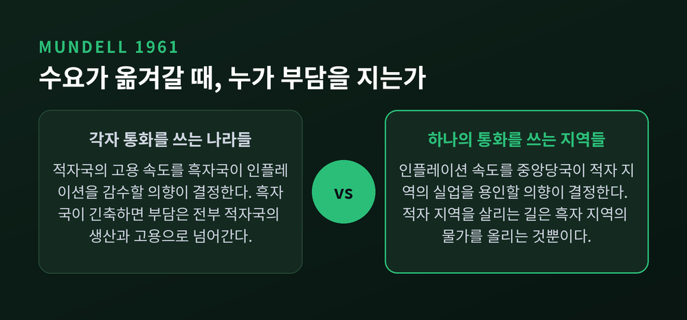
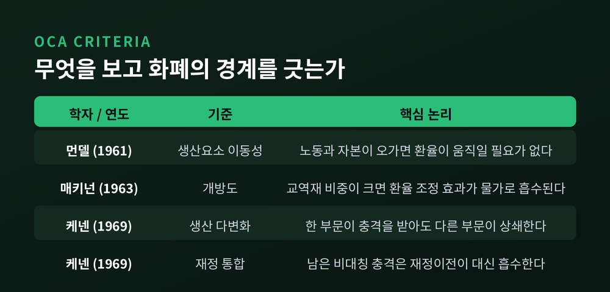
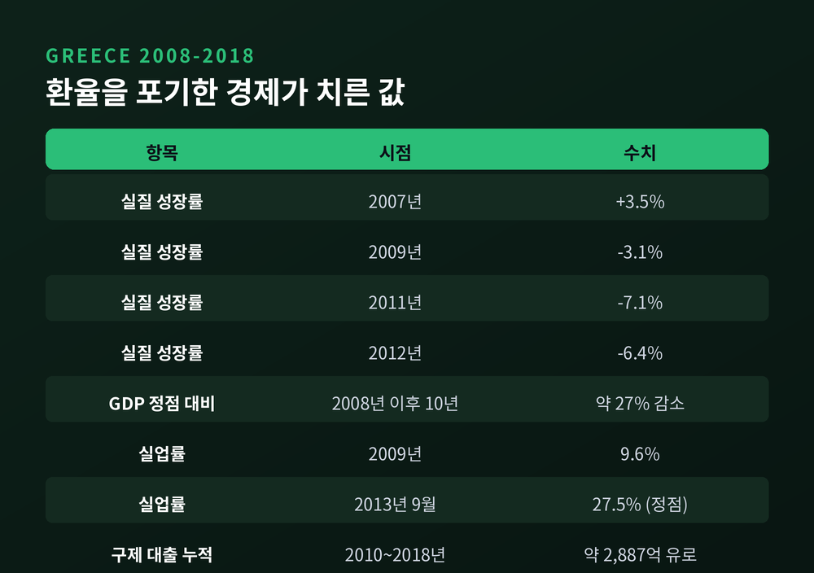
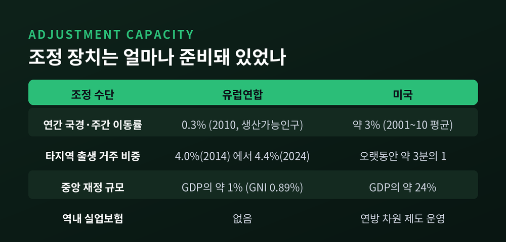
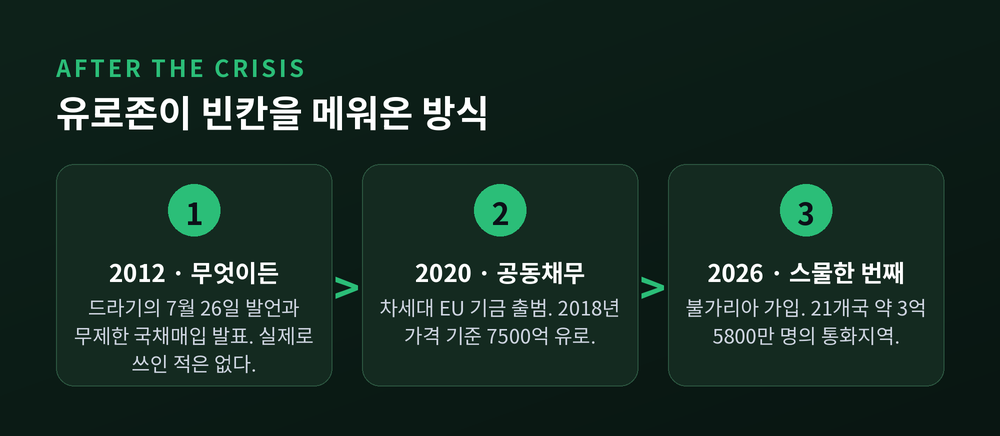

이번 글에서는 최적통화지역 이론을 정리해 보겠습니다. 나라마다 다른 돈을 쓰는 것이 당연해 보이지만, 경제학은 60년 넘게 그 전제를 의심해 왔습니다. 화폐를 함께 쓸 때 무엇이 남고 무엇이 사라지는지, 이론과 실제를 나란히 놓고 따라가 봅니다.
로버트 먼델은 1961년 『아메리칸 이코노믹 리뷰』에 짧은 논문 하나를 실었습니다. 제목은 「최적통화지역 이론」이었고, 분량은 아홉 쪽에 불과했습니다.
먼델은 통화지역을 이렇게 정의했습니다. "환율이 고정되어 있는 영역."
정의가 끝나자마자 그는 질문을 던집니다. 그 영역의 적절한 범위는 어디까지인가.
이 질문이 논문의 전부입니다. 당시 학계의 논쟁은 고정환율이냐 변동환율이냐에 머물러 있었습니다. 먼델은 그 앞에 한 단계를 더 놓았습니다. 하나의 환율이 적용되는 땅을 어떻게 그을 것인가부터 물은 것입니다.
기준으로 삼은 것은 국경이 아니었습니다. 그는 각주에서 지역을 이렇게 규정합니다. "그 안에서는 생산요소가 이동하지만, 지역들 사이에서는 이동하지 않는 영역."
노동과 자본이 자유롭게 오가는 범위. 그것이 화폐의 경계여야 한다는 뜻입니다.
논문을 쓸 당시 먼델은 국제통화기금 특별조사국 소속의 이코노미스트였습니다.
먼델의 논증은 사고실험 하나로 이뤄집니다.
A와 B 두 곳이 완전고용 상태에 있습니다. 그런데 수요가 B의 물건에서 A의 물건으로 옮겨갑니다. 임금과 물가는 단기에 내려가지 않는다고 가정합니다. 내리려면 실업을 감수해야 하니까요.
먼저 A와 B가 각자 통화를 가진 나라인 경우입니다. B에는 실업이, A에는 물가 압력이 생깁니다. A가 물가 상승을 어느 정도 허용하면 교역조건이 바뀌면서 B의 짐이 가벼워집니다. 그러나 A가 인플레이션을 막겠다고 긴축하면 조정 부담은 전부 B로 넘어갑니다. B의 실질소득이 줄어야 하는데 교역조건으로 줄일 수 없으니, 결국 생산과 고용이 줄어드는 방식으로 줄어듭니다.
먼델은 흑자국이 물가를 억누르는 정책이 세계경제에 "경기수축적 편향"을 심는다고 적었습니다.
다음은 A와 B가 한 나라 안의 두 지역인 경우입니다. 중앙당국이 완전고용을 목표로 삼는다면 B의 실업을 없애기 위해 통화를 풀 것입니다. 그러면 A의 물가가 오릅니다. 실은 그것이 유일한 경로입니다. 적자 지역의 고용을 되살리는 방법이 흑자 지역의 물가를 올리는 것뿐이니까요.
먼델이 뽑아낸 대구는 이렇습니다.
각자 통화를 쓰는 나라들의 통화지역에서는, 적자국의 고용 속도를 흑자국이 인플레이션을 감수할 의향이 결정한다. 단일 통화를 쓰는 여러 지역의 통화지역에서는, 인플레이션 속도를 중앙당국이 적자 지역의 실업을 용인할 의향이 결정한다.
어느 쪽도 실업과 인플레이션을 동시에 막지는 못합니다. 그리고 먼델은 못을 박습니다. 잘못은 통화지역의 종류가 아니라 통화지역의 범위에 있다고.

논문의 논리를 그대로 밀면 이상한 결론에 닿습니다. 실업이 생기는 작은 구석마다 통화를 하나씩 만들어야 한다는 말이 되니까요.
먼델도 이 지점을 알고 있었습니다. 그래서 통화 수에 상한이 있는 이유를 따로 적었습니다.
첫째, 화폐의 편의가 줄어듭니다. 통화가 많아질수록 값을 재는 자로서도, 주고받는 수단으로서도 쓸모가 떨어집니다. 그는 극단을 가정합니다. 통화의 수가 상품의 수와 같아진 세계라면 화폐의 유용성은 사라지고 물물교환과 다를 바 없어진다고.
여기서 먼델은 존 스튜어트 밀을 끌어옵니다. 밀은 『정치경제학 원리』에서 이렇게 썼습니다. 거의 모든 독립국이 자기와 이웃 모두의 불편을 무릅쓰고 저마다의 독특한 통화를 가짐으로써 국적을 주장한다고.
둘째, 외환시장이 너무 얇아집니다. 시장이 얇으면 투기자 한 명이 가격을 흔들 수 있습니다.
셋째, 화폐환상에 기대기 어려워집니다. 통화지역이 작아질수록 소비에서 수입품이 차지하는 몫이 커집니다. 그러면 노동자가 명목임금만 보고 협상한다는 전제가 무너집니다. 환율을 움직여 실질임금을 조정한다는 발상 자체가 힘을 잃는 것입니다.
이 대목의 결론은 앞과 정반대입니다. 편의만 따지면 최적통화지역은 세계 전체라고 먼델은 적었습니다.
한 논문 안에 상반된 두 힘이 들어 있는 셈입니다. 안정화를 생각하면 작게, 편의를 생각하면 크게. 최적통화지역은 그 사이 어딘가입니다.
숫자로도 확인된 이득이 있습니다. 유럽집행위원회는 1990년 보고서 「하나의 시장, 하나의 화폐」에서 환전과 환위험 회피에 드는 거래비용을 연간 국내총생산의 최소 0.4%로 추산했습니다. 단일통화는 이 비용을 없앱니다.
먼델 이후 두 개의 기준이 더해집니다.
로널드 매키넌은 1963년에 개방도를 들고나왔습니다. 교역재가 총생산이나 총소비에서 차지하는 비율입니다. 개방도가 높은 나라일수록 통화동맹의 이득이 큽니다. 환율을 움직여도 곧바로 국내 물가로 옮겨붙어, 조정 효과 자체가 흐려지기 때문입니다.
피터 케넨은 1969년에 생산의 다변화를 제시했습니다. 산업 구성이 다양하면 한 부문을 때린 충격이 다른 부문에서 상쇄됩니다. 케넨은 여기에 재정 통합을 덧붙였습니다. 두 지역 사이 재정 통합 수준이 높을수록 재정이전으로 비대칭 충격을 흡수할 수 있다는 것입니다.
세 기준은 결국 같은 질문의 세 얼굴입니다. 환율을 포기했을 때, 대신 무엇이 조정을 맡아줄 것인가.

유로 출범을 앞두고 실증 연구가 나옵니다.
타미 바유미와 배리 아이켄그린은 1993년 전미경제연구소 워킹페이퍼에서 유럽 각국이 받는 충격을 수요 충격과 공급 충격으로 나눠 측정했습니다. 1963년부터 1989년까지의 연간 자료를 썼습니다.
결과는 유럽을 둘로 갈랐습니다.
공급 충격 상관이 높은 핵심부는 독일, 프랑스, 벨기에, 네덜란드, 덴마크였습니다. 상관이 낮은 주변부는 그리스, 아일랜드, 이탈리아, 포르투갈, 스페인, 영국이었습니다.
무엇보다 충격이 흩어지는 정도가 유럽이 미국보다 컸습니다. 두 사람은 이 핵심-주변부 구도가 지속되면 통화동맹에 해가 될 것이라고 적었습니다.
경고가 나온 지 6년 뒤 유로가 출범했습니다.
그리스의 숫자를 보겠습니다. 모두 유럽의회 연구자료와 전미경제연구소 연감에 실린 것입니다.
2006년 성장률은 5.5%, 2007년은 3.5%였습니다. 2008년에 마이너스 0.2%로 돌아선 뒤로는 내리막이었습니다. 2009년 마이너스 3.1%, 2010년 마이너스 4.9%, 2011년 마이너스 7.1%, 2012년 마이너스 6.4%.
2008년부터 10년 동안 국내총생산은 정점 대비 약 27% 줄었습니다.
실업률은 2009년 9.6%에서 2013년 9월 27.5%로 정점을 찍었습니다. 청년 실업률은 60%를 넘었습니다.
유럽안정화기구 집계로 그리스가 2010년 이후 받은 구제 대출은 모두 약 2,887억 유로입니다. 1차 그리스 대출 지원에서 529억, 2차 유럽재정안정기금에서 1,418억, 3차 유럽안정화기구에서 619억, 국제통화기금에서 321억 유로가 집행되었습니다.
환율을 움직일 수 없을 때 조정은 어디로 갈까요. 임금으로 갑니다. 이른바 내부 평가절하입니다.
라트비아가 교과서적인 사례입니다. 2007년 말부터 2009년 말까지 국내총생산이 약 24% 줄었습니다. 명목환율이 고정이었으므로 단위노동비용을 낮추는 길밖에 없었습니다. 공공부문에 남은 사람의 임금은 평균 25%, 민간부문은 평균 10% 깎였습니다. 2008년 12월부터 2010년 12월 사이 임금은 약 8%, 단위노동비용은 약 20% 내려갔습니다.
환율이 하룻밤에 할 일을, 사람들이 몇 년에 걸쳐 나눠서 감당한 것입니다.

이론이 요구한 조건에 유로존을 대보면 두 칸이 비어 있습니다.
먼저 먼델의 요소 이동성입니다. 유럽재단 자료로 2010년 유럽연합 생산가능인구의 연간 국경 간 이주율은 0.3%였습니다. 지역 간 이주까지 넓혀도 1% 안팎입니다. 다른 회원국에서 태어나 지금 거주 중인 생산가능인구 비율은 2014년 4%에서 2024년 4.4%로 올랐습니다. 같은 기간 미국의 주간 이동률은 2001년부터 2010년까지 평균 약 3%였습니다. 가장 큰 장벽은 언어와 문화로 지목됩니다.
다음은 케넨의 재정 통합입니다. 유럽연합 예산은 역내 국내총생산의 약 1% 수준입니다. 2023년 기준으로 국민총소득의 0.89%였습니다. 미국 연방정부 지출은 국내총생산의 약 24%입니다. 집행위원회는 2028년부터 2034년까지의 예산을 국민총소득의 1.26%로 올리자고 제안했습니다.
이 규모로는 경기가 나쁜 회원국에 돈을 몰아주는 일이 불가능합니다. 유로존 차원의 실업보험도 없습니다.
통화는 하나로 묶였는데 재정은 회원국 수만큼 흩어져 있었습니다. 위기는 그 틈으로 들어왔습니다.

여기서 반대편 논거가 등장합니다.
제프리 프랭클과 앤드루 로즈는 1998년 『이코노믹 저널』 논문에서 최적통화지역 기준이 내생적이라고 주장했습니다. 선진 20개국의 30년치 자료를 보니, 무역이 긴밀한 나라일수록 경기순환의 상관이 높았다는 것입니다.
그렇다면 순서가 바뀝니다. 지금 조건을 못 갖췄어도 통화동맹에 들어가 무역이 늘면 조건이 뒤따라 만들어질 수 있습니다.
반론도 만만치 않습니다. 폴 크루그먼은 1993년 「유럽통화동맹을 위한 매사추세츠의 교훈」에서 정반대를 이야기했습니다. 통합이 진행되면 각 지역이 비교우위를 따라 더 특화되고, 특화된 지역경제는 특정 충격에 더 약해진다는 것입니다. 통합이 비대칭 충격의 위험을 오히려 키운다는 뜻이 됩니다.
두 견해 중 어느 쪽이 맞는지는 아직 정리되지 않았습니다. 두 힘이 서로 다른 시간 척도에서 동시에 작동한다고 보는 최근 연구도 있습니다. 저도 한쪽 손을 들어드릴 만큼 확신이 서지는 않습니다.
유로존은 위기 이후 비어 있던 칸을 조금씩 채워왔습니다.
2012년 7월 26일, 당시 유럽중앙은행 총재 마리오 드라기가 런던에서 말했습니다. 권한 범위 안에서 유로를 지키기 위해 무엇이든 하겠다고. 뒤이어 무제한 국채매입 프로그램의 세부내용이 발표되었습니다.
발표만으로 국채시장에서 유로 이탈 위험이 걷혔습니다. 그리고 이 프로그램은 지금까지 한 번도 실제로 쓰이지 않았습니다.
같은 해 6월 시작된 네 의장의 보고서 작업은 은행동맹으로 가는 문을 열었습니다.
2020년 7월에는 차세대 유럽연합 기금이 나옵니다. 2018년 가격 기준 7,500억 유로 규모입니다. 핵심인 회복·복원력 기금이 6,725억 유로를 차지합니다. 유럽연합이 경제를 안정시키기 위해 상당한 규모의 공동 채무를 직접 발행한 첫 사례로 평가됩니다.
예전에는 회원국 각자가 시장에서 홀로 자금을 구했습니다. 지금은 공동으로 빌린 돈이 회원국 사이를 흐릅니다.
그리고 2026년 1월 1일, 불가리아가 스물한 번째 회원국으로 유로를 받아들였습니다. 유럽연합 이사회는 2025년 7월 8일 마지막 법령 세 건을 승인했습니다. 전환율은 1유로에 1.95583 레프로 정해졌습니다. 현금은 1월 한 달 동안 함께 통용되었고, 가격 이중표시는 2026년 8월 8일까지 이어집니다.
지금 유로존은 21개국, 약 3억 5,800만 명의 통화지역입니다.
다만 가입 과정이 순탄하지만은 않았습니다. 불가리아 안에서는 정치적 반대가 컸고 국민 지지도 높지 않았습니다. 물가가 오를 것이라는 걱정이 컸다고 전해집니다.

정리하면 이렇습니다.
한 화폐를 함께 쓰면 환전 비용과 환율 위험이 사라지고, 값을 재는 자가 하나로 통일됩니다. 대신 각자에게만 닥친 충격을 환율로 흘려보낼 길이 막힙니다. 그 충격은 사라지지 않고 임금과 고용으로 옮겨갈 뿐입니다.
그래서 먼델이 남긴 문장은 지금도 유효합니다. "잘못은 통화지역의 종류가 아니라 그 범위에 있다."
화폐를 함께 쓸 준비가 되었느냐고 묻는다면, 그것은 환율에 관한 질문이 아니라 사람과 돈이 국경을 얼마나 넘나드는가에 관한 질문일 것입니다.